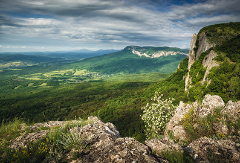
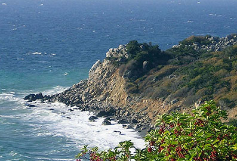
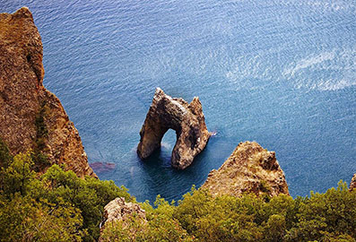

Єдиним містом Криму, що зберегло назву з античного часу, є Феодосія.
|
Кримський природний заповідник

Природоохоронна науково-дослідна установа загальнодержавного значення. Це один з найбільших та один з найстарших в Україні заповідників.
|
Заповідник Мис Мартьян

Природний заповідник, розташований в Автономній республіці Крим, біля м. Ялта. Заповідник створено з метою збереження у природному стані цінних природних комплексів мису Мартьян, охорони і збереження рідкісних видів рослин і тварин, проведення науково-дослідних робіт.
|
Карадазький заповідник

Заповідник, розташований у південно-східній частині Кримського півострова за 36 км на південний захід від Феодосії між Отузькою і Коктебельською долинами, між населеними пунктами Коктебель, Щебетовка, Курортне.
|